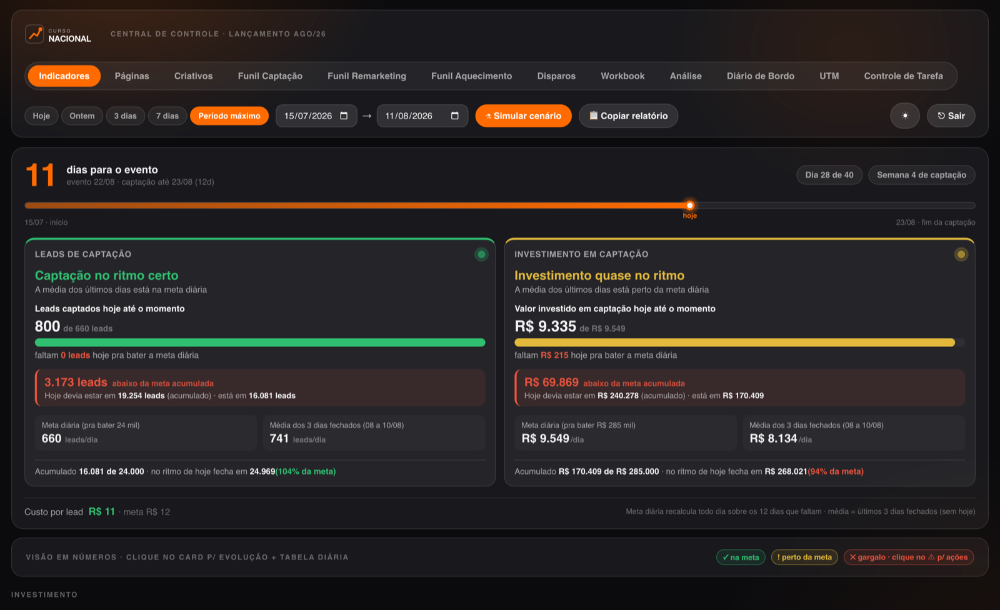

Ver o casoSistema em produção · Vue 3 + Fastify + Postgres
Central de controle de lançamento
A camada de dados de um lançamento digital inteiro, construída por mim de ponta a ponta: autenticação e renovação de token de seis plataformas, ingestão, normalização, definição de cada métrica e de cada meta.
Roda sobre R$ 500 mil em verba de tráfego e disparos e é a fonte que sete frentes da equipe consultam para decidir o dia seguinte, da mídia à direção. Eu opero e entrego a leitura.